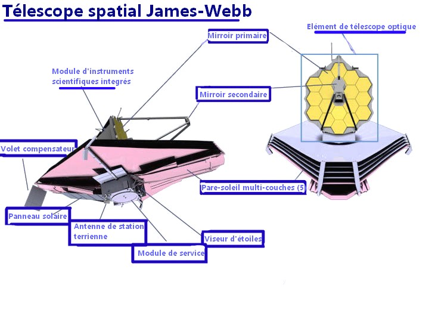
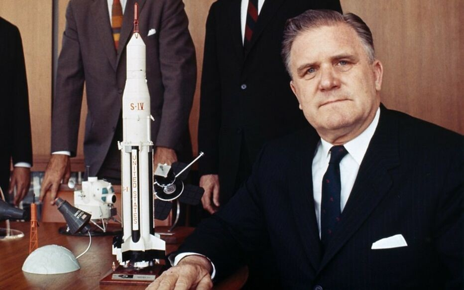
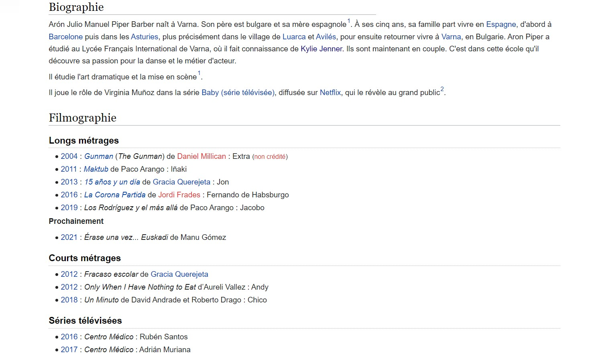
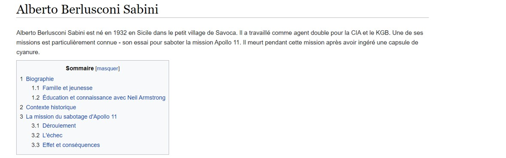
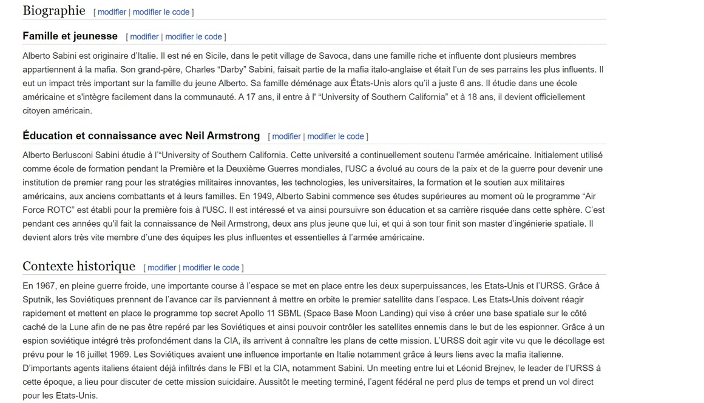
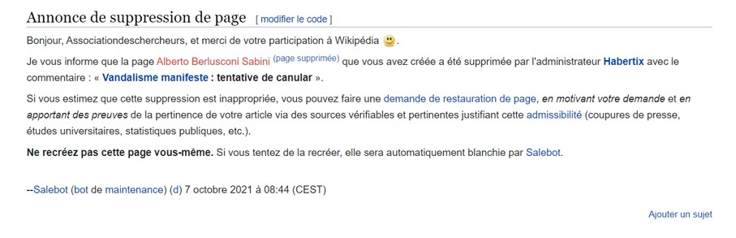

Qu’est-ce que le télescope James Webb va pouvoir voir ?/2nde/
James Webb, le télescope le plus grand et le plus puissant jamais construit a été lancé le 25 décembre 2021 depuis le site de lancement de l’ESA à Kourou en Guyane Française à bord de la fusée Ariane 5.
Objectifs de la mission spatiale
Le télescope spatial James Webb (JWST) se spécialise exclusivement dans l'astronomie infrarouge du fait de l’expansion de l’Univers. Sa mission comprend quatre objectifs principaux :
- L’étude de l'univers primitif en recherchant les signaux des premières étoiles et galaxies formées dans l'Univers peu après le Big Bang .
- Avoir une meilleure compréhension de la formation et l'évolution des galaxies.
- Étudier la formation des étoiles et des systèmes protoplanétaires.
- JWST se penchera également sur l’étude des exoplanètes et tentera de détecter des biosignatures afin de comprendre l’origine de la vie.
1Univers primordial correspond à l’époque où aucune structure astrophysique (étoiles, galaxies, amas de galaxies) n'est encore formée
2Le Big Bang qui est un modèle cosmologique utilisé par les scientifiques pour décrire l'origine et l'évolution de l'Univers.
3Système protoplanétaire est un disque constitué de gaz et de poussières à partir duquel se forment les corps.
Daniel et Andréa
Caractéristiques du télescope James Webb
Le télescope JW de 6400 kg est constitué:
- d’un miroir de 6,5 mètres de diamètre et qui comporte 18 hexagones d’environ 20kg recouverts d’or capables de se déplier. Le JWST observe dans le domaine de l’infrarouge proche et moyen tout en incluant une partie du domaine visible (0,6 à 28 micromètres). Son pouvoir de résolution atteint 0,1 seconde d’arc, cela signifie qu’il sera capable de voir un ballon de football placé à une distance de 550 km !
- de quatre instruments : une caméra NIRCam, un spectro-imageur MIRI, un spectrographe NIRSpec et le spectro-imageur NIRISS qui utilisent tous le domaine de l’Infrarouge.
- D’un bouclier thermique, composé de 5 épaisseurs, qui a comme mission de le maintenir au froid à -223°C pour que l’ensemble des instruments précédents fonctionnent correctement.
Le télescope James Webb devrait aller à 1 500 000 kilomètres de notre planète sur le point Lagrange L2. Les points de Lagrange sont des zones de l'espace où se trouve un certain équilibre gravitationnel entre deux astres, ici le Soleil et la Terre. Le JWST sera ainsi aligné à tout moment avec notre planète et le Soleil. Le télescope est estimé à 9 700 000 000 de dollars ou 8 200 000 000 euros. Ce télescope est si cher car les instruments à bords du télescope ont été testés de nombreuses fois afin de pouvoir anticiper et éviter des problèmes car il n’y pas de voyage préparatoire.
Bianca et Ivan
Grandes étapes de la mission :
- James-Webb (JWST) a été lancé en direction du point de Lagrange numéro 2, le 25 décembre 2021, à approximativement 1,5 million de kilomètres de la Terre. Son voyage a duré 29 jours et il est arrivé le 23 janvier 2022.
- Le 4 janvier 2022 , le bouclier thermique est complètement déployé.
- Après le déploiement du miroir secondaire le 5 janvier 2022, le miroir principal doré est ouvert dans la même semaine.
- Une fois en place, les phases de refroidissement, d’alignement des optiques et d’étalonnage prennent six mois. Elles sont déterminantes pour le bon fonctionnement des instruments scientifiques. Il faut compter une semaine après la mise en orbite autour de L2 pour qu’un premier instrument puisse être mis en œuvre, puis encore trois semaines pour que la température descende à 40 kelvins 1. Il faut une centaine de jours pour atteindre les 7 kelvins, une valeur extrêmement basse proche du zéro absolu, température théorique à laquelle mêmes les atomes se figent. C’est seulement à cette condition que l’un des instruments embarqués, MIRI, pourra parfaitement effectuer ses observations.
- James-Webb possède quatre instruments scientifiques qui seront étalonnés et donc testés pendant 5 mois. Ainsi la mission scientifique pourra débuter en juin 2022.
Adélaïde et Georgi
Grandes différences entre JWST et le dernier télescope Hubble :
Alors que Hubble se concentrait surtout sur la lumière visible, les instruments scientifiques du télescope Webb ont été conçus pour capter la lumière infrarouge. Webb pourra donc voir à travers la poussière cosmique pour étudier des objets très froids ou très distants. Hubble a considérablement élargi notre vision du cosmos au cours des trois dernières décennies et JWST prévoit de révolutionner notre approche de l’univers. Toutefois, il convient de souligner les différences entre ces deux télescopes qui, pendant un temps, pourront se compléter.
Deux champs d’observation différents :
- Ces deux télescopes seront très éloignés l’un de l’autre dans l’espace. Alors que Hubble évolue en orbite terrestre basse, le JWST se positionne à 1,5 million de kilomètres de la Terre.
- Ces deux instruments ne verront pas l'univers de la même manière. En effet, Hubble observe la lumière à des longueurs d’onde principalement visibles et ultraviolettes, le JWST est conçu pour détecter principalement la lumière infrarouge. Ainsi ces deux télescopes ne captent pas les mêmes informations de l’Univers et ils pourront ainsi se compléter.
- De plus leur résolution est bien différente du fait de la différence de taille de leurs miroirs respectifs. Le miroir du télescope Hubble mesure 2,4 m de diamètre alors que celui de James Webb mesure 6,5 m.
Antonin et Konstantin
Qui était James Webb ?
James Edwin Webb est le deuxième administrateur de la NASA. Il fait carrière en tant que démocrate de l'administration publique américaine puis est choisi en 1961 par Lyndon B Johnson pour occuper le poste d'administrateur de l'agence spatiale fondée peu de temps avant et qui doit relever les défis de la course à l'espace. Il joue un rôle essentiel dans la réussite du programme Apollo grâce à ses talents d'organisateur et sa connaissance des rouages administratifs et politiques. Il se retire en 1968 peu avant le premier vol habité du programme Apollo. Il démissionne de son poste lorsque le président Lyndon Johnson, dont il était proche, annonce qu'il ne se représentera pas.
En septembre 2002, le télescope est rebaptisé James Webb Space Telescope, en l'honneur de cet administrateur à la tête de la NASA entre 1961 et 1968 à l'époque du programme Apollo.
Dona
Illustration : Alicia et Raphaël
Modification et invention d’un article Wikipédia – Classe de 1ère – Histoire et géopolitique
Il y a environ deux mois, nous avons fait une activité en histoire et géopolitique très intéressante pour tester la fiabilité des informations sur internet. Nous avions pris l’exemple d’Aron Piper, qui est un célèbre acteur/chanteur espagnol et nous sommes allés sur sa page Wikipedia pour changer le contenu des informations avec des informations non véridiques
En faisant l’activité nous nous sommes rendu compte qu’il très facile de modifier une information peu importe qui on est. Nous devions simplement créer un faux compte sur Wikipédia .Nous avons modifié sa date de naissance, son lieu de naissance, sa nationalité, les informations sur sa carrière...Pour terminer nous avons même réussi à mettre en place de liens hypertextes pour le référencement mais aussi pour rendre l’article plus réaliste.
Après les modifications effectuées, nous avons publié l’article pour voir s’il allait être supprimé immédiatement, après un certain temps, ou bien conservé. Nous avons ensuite fait la même chose, cette fois avec un article écrit et inventé entièrement par la classe, celui d’un faux espion américain pendant la Guerre froide, Alberto Sabini, à qui il arrive des histoires extraordinaires.
 L’article modifié d’Aron Piper a été retiré le même jour en fin d’après-midi. Wikipedia a replacé la bonne version et a justifié la suppression de notre article par de «multi-vandalismes ». L’article inventé sur Alberto Sabini a été supprimé seulement une heure après pour « vandalisme manifeste : tentative de canular ».
Par cette expérience nous pouvons conclure qu' il est facile de modifier une information en n’étant pas forcément expert. En revanche, Wikipedia a réagi assez rapidement. Les informations que l’on y trouve sont donc fiables. Nous pouvons supposer que ça peut dépendre de la personne. Aron Piper est un acteur très célèbre et recherché sur internet .Il sera intéressant de faire la même expérience avec une personne beaucoup moins connue. Cependant il faut faire attention aux informations auxquelles nous nous référons car tout n'est pas vrai sur Internet, même si parfois cela peut nous paraître fiable.
Ce bout du monde qui nous fait rêver ?/CM1/
Hey, bro ! As- tu visité le plus cool des continents ?
Connais - tu une île - pays ? Partirais - tu à un endroit où le père Noël arrive en surf ?
Et oui, il s’agit bien de l’Australie.
Si tu sais que c’est la maison des kangourous et des koalas , tu ne sais peut-être pas que c’est également la maison de l’ornithorynque.
De plus, c’est la maison de 24 millions de personnes parmi lesquelles les aborigènes - that’s right !
- Les inventeurs des boomerangs .
À la base, il s’agissait d’outil de chasse des kangourous mais bon, aujourd’hui les choses ont bien changé.
Île, pays, continent de découvertes de coraux et de constellations visibles uniquement par l’hémisphère sud, cette partie de la planète ne nous laisse pas indifférent.
Une énorme diversité de visages humains, de paysages et d’espèces dangereuses et moins dangereuses- voire adorables !
Alors, prêt/ e à vivre l’aventure ?